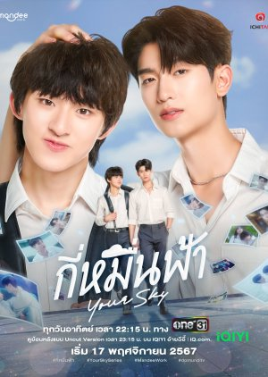
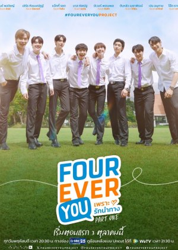
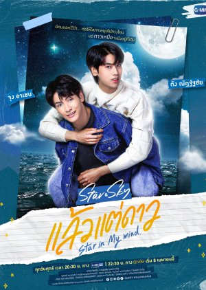
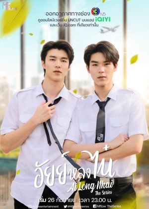
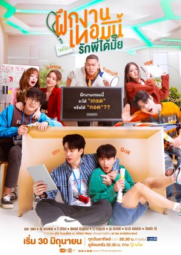
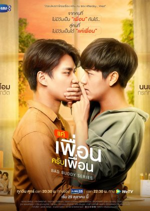
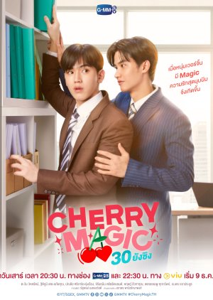
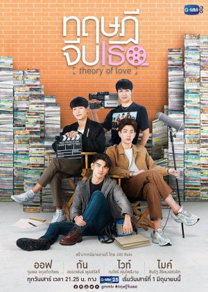

Ranking:
Your Sky

One of the best Thai series because it beautifully captures the complexities of first love,
friendship, and self-discovery, set against a vibrant university backdrop, making it relatable and
endearing to viewers.
Fourever You

Its heartwarming portrayal of campus romances, its blend of comedy and romance, and its
exploration of complex relationships, making it a memorable and engaging watch for audiences.
Star In My Mind

It beautifully captures the complexities of first love, friendship, and self-discovery, set against a vibrant university backdrop,
making it relatable and endearing to viewers.
ThamePo
Its captivating storyline, stunning cinematography, and the authentic portrayal of complex emotions, making it a deeply impactful and
memorable watch.
My Love Mix Up

A captivating series that excels due to its engaging blend of romance, comedy, and relatable high school drama, making it a delightful and
entertaining watch for audiences.
Ai Long Nhai

Its lighthearted and entertaining portrayal of campus romance, its endearing characters, and the natural chemistry between the leads, making
it a delightful and engaging watch for fans of fluff romance.
The Trainee

Its unique blend of office romance, personal growth, and humor, coupled with compelling performances from its lead actors, making it a delightful
and engaging watch.
Bad Buddy

It masterfully combines a captivating storyline, memorable characters, and a nuanced exploration of complex emotions, all set against the backdrop
of a forbidden high school romance, making it a deeply impactful and unforgettable watch.
Cherry Magic

Its captivating blend of romance, humor, and magical realism, enhanced by the endearing chemistry between leads Tay Tawan and New Thitipoom, making
it a heartwarming and thoroughly enjoyable watch.
Theory Of Love

It offers a sophisticated exploration of complex relationships, emotional depth, and personal growth, all set against the backdrop of a poignant love
story that resonates deeply with audiences.